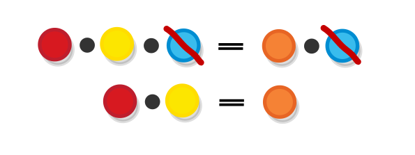

Since we are done with categories, let’s look at some other structures that are also interesting - monoids. Like categories, monoids/groups are also abstract systems consisting of objects and rules for manipulating these objects.
Monoids are simpler than categories. A monoid is defined by a collection (set) of elements and an operation that allows us to combine two element and produce a third one of the same kind.
Let’s take our familiar colourful balls.

In this case a monoid would be a rule (operation) for “combining” two balls into one.
An example of such rule would be blending the colors of the balls, as if we are mixing paint.
You can probably think of other ways to define such a rule. This will help you realize that there can be many ways to create a monoid from a given set of items. The monoid is not the set itself, it is the set together with the rule.
The monoid rule should, like functional composition, be “associative” i.e. applying it on the same number of elements in a different order should make no difference.

When a rule is associative, this means we can use all kinds of algebraic operations to any sequence of terms (or in other words to apply equation reasoning), like for example we can add or remove a term that is present at both sides of an equation and retaining the equality of the existing terms:

Actually, not any (associative) rule for combining elements makes the balls form a monoid (it makes them form a “semigroup”, which is also a thing, but that’s a separate topic). In order to be a monoid, a set must feature what is called an “identity element” of a given rule (or a zero element, if you prefer) - one that, when combined with any other element gives back that same element not the identity but the other one. Or simply x • i = x and i • x = x for any x. In the case of our color-mixing monoid the identity element is the color white, represented by the white ball:
As you probably remember from the last chapter, functional composition is also associative and it also contains an identity element, so you might start suspecting that it forms a monoid in some way. And it is really the case with one little caveat.
To keep the suspense alive, let’s see some simpler monoids before we dwelve into that:
Mathematics is not all about numbers, however numbers do tend to pop up in most of its areas and monoids are no exception. The set of natural numbers N form a monoid when combined with the all too familiar operation of addition (or to use the official terminology N form a monoid under addition).

(if you see a 1 + 1 = 2 in your texbook you know you are working on math foundations (or you are in kindergarden)).
The natural numbers also form a monoid under multiplication as well:

Task: Which are the identity elements of those monoids?
Task: Go through other mathematical operations and figure out why don’t they are not monoidal.
Thinking about other operations that we covered (operation being a function which takes a pair of element of a given type and returns one element of the same type), we may remember the boolean operations AND and OR. which operate on the set, consisting of just two values { True, False }. Those operations form monoids too. Proving that they do is easy enough by just ennumerating all cases.
We can prove that AND is associative by expanding the formula (A AND B) AND C = A AND (B AND C) in all possible ways:
(TRUE AND FALSE) AND TRUE = TRUE AND (FALSE AND TRUE)
(TRUE AND FALSE) AND FALSE = TRUE AND (FALSE AND FALSE)
(FALSE AND FALSE) AND TRUE = FALSE AND (FALSE AND TRUE)
…
And we can prove that TRUE is the identity element by expanding the other formulas that state that for all elements A I AND A = A
FALSE AND TRUE = FALSE
TRUE AND TRUE = TRUE
…and then do the same for A AND I = A.
In order to form the correct intuition about monoids, try to avoid thinking of the elements in the set as objects, but instead think of them as actions. For example, when thinking about numbers don’t think of them as quantities (as in two apples, two oranges etc.), but as operations, (e.g. as the action of addding one to a given quantity). In other words, don’t think of the element by itself, but only think of it together with the operation (in this case addition).
This touches a programming concept which is very popular in category-theory inspired languages - currying - that is based on the idea that a function that accepts two arguments together with one of those arguments already supplied can be viewed as a function which takes one argument. e.g. the function add(number, number) together with the element 2 is equivalent to the addTwo(number) function.
In general, we use monoids and related structures as a way to model how a set of (associative) actions that are performed on a given object (or objects) alter it’s state. We can do that, provided that the object’s state is determined solemnly by the actions that are performed on it, this allows us to leave the object out of the equation and concentrate on how the actions are combined. And as per usual in the actions (and objects) can be anything, from mixing colors in paint, or adding a quantities to a given set of things etc.
Monoid operations obey only one law - they are associative (two, if you count the existence of the identity element). In some cases we come across operations that also obey other rules that are also interesting. Imposing more (or less) rules to the way in which actions are combinded results in the definition of other monoid-like structures.
Looking at the monoid laws and the examples we gave so far, we observe that all of them obey one more rule (law) which we didn’t specify, namely that the order in which the operations are applied is irrelevant to the end result.

Such operations (ones for which combining a given set of objects yields the same result no matter which one is first and which one is second) are called commutative operations. Monoids with operations that are commutative are called commutative monoids.
As we said, addition is commutative as well - it does not matter whether if I have given you 1 apple and then 2 more, or if I have given you 2 first and then 1 more i.e. x + y = y + x.

All monoids that we examined so far are also commutative, and we will see some non-commutative ones later.
A group is just a monoid in which each element has what is called an “inverse” element where the element and its inverse cancel each other out when applied one after the other, in other words , forall x, there must exist x’ such that x • x’ = i ( where i is the identity element).
If we view monoids as a means of modelling the effect of applying a set of (associative) actions, we use groups to model the eeffects of actions are also reversible.
An nice example of a group can be found in the realm of numbers (really, numbers are a nice example of almost all properties) - it is the set of integers under addition, where the inverse of each number is its opposite number. The above formula, then, becomes x + (-x) = 0
The study of groups is a field that is much bigger than the theory of monoids (and perhaps bigger than category theory itself). And it all started with the what are now called the “symmetry groups” which we will look into with more details.
Here are the algebraic structures that we have seen so far and the laws that they obey.
| Semigroups | Monoids | Groups | |
|---|---|---|---|
| Associativity | X | X | X |
| Identity | X | X | |
| Invertability | X |